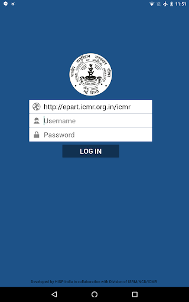
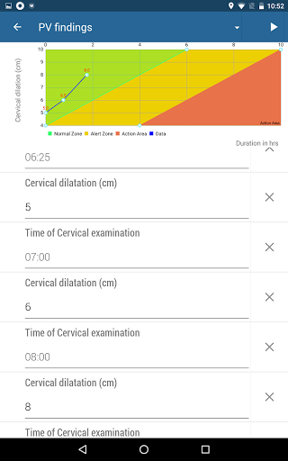

RBMCH division ICMR is doing an ongoing research study to monitor the progress of labor and the benefits of
plotting Partograph to minimize the complications during labour and maternal mortality. A partograph differentiates normal from abnormal progress in labor and
identifies women likely to require intervention. Having a digital partograph plotted at the point of care allows active management of labour and with the
intervention of technology it becomes easier to track non-progressive labour or any complications during the labour. Early and immediate identification of
complications allows immediate intervention which can help prevent maternal mortality.
For the same research ICMR chose HISP India to develop an application to plot e-Partograph using android
devices at the point of care.
E-Partograph application has been developed by HISP India in collaboration with ISRM/RBMCH/ICMR using one of
the widely used open source Health Informatics platform called DHIS2 (District Health Information System).
Features of E-Partograph Application
E-Partograph application developed using DHIS2 allows the provider to record and store patient’s data at the
point of care.
The pregnant female can be registered into the application as soon as she arrives at the facility. The admission
findings, obstetric details, History of complications, Family History, Cervical dilatation details etc. can be recorded directly into the application.
The detailed features of the application are mentioned below:
- The E- partograph allows the registration of females as soon as they arrive at the facility for delivery.
- Allows tracking of the longitudinal record of the female across all visits.
- Allows the data to be captured offline in places where internet connectivity is not available. Data is immediately
synced to the server once the internet connectivity is restored.
- This application allows the user to capture location coordinates of the place where delivery is being conducted and
thus the spatial distribution of the beneficiaries can be seen on the default GIS app.
- The Vital stats of the female can be recorded multiple times at various stages to track the progress of labour.
- It allows plotting of e-Partograph where the cervical dilation can be recorded at periodic intervals. The graph is plotted
automatically as the cervical dilatation details are entered which helps in monitoring the progress of labour during the active phase as well as if the readings cross
the alert and action lines. It is a graphical record of cervical dilatation in centimeters against duration of labor in hours.
- As soon as the readings cross the action and alert lines, the registered care provider receives an SMS which gives the details
of labour (Cervical dilatation, Fetal heart rate etc.) and gives a link to view the partograph on the mobile device. The user can login application and view the partograph.
- It allows tracking of female’s health statistics during all 3 distinct phases of labour as well as during the recovery phase.
Reports are used to track the difference in the statistics during all the phases to help in easy recovery and to prevent complications and maternal mortality.
- Captures details of the baby/babies as well as postpartum details of the female. Details of the babies including Mode of delivery,
any deformity, anomalies, essential drugs given are captured. Allows to capture Mother’s and child’s status after delivery or the referral details.
- If need arises, a discharge card can be generated from the application directly and can be given to the female when she is
discharged.
- Allows live tracking of the statistics and gives reports on the data e.g.: Number of females admitted to the facility, complications
observed in labour, number of females stayed at facility overnight, Number of children born etc. via the creation of charts, tables and maps which can be presented in form
of a dashboard.
 